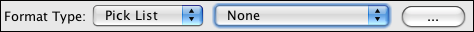

Listas de seleção definidas pelo usuário
Qualquer campo no qual os dados são limitados a um vocabulário controlado é chamado de
Lista de Seleção. Por exemplo, navegar no Specify com o campo Título do Agente limitado às opções de:
Ass. Diretor, Curador, Dr., Sr., Sra. e Sra.
Novas listas de seleção definidas pelo usuário podem ser criadas para campos existentes, mas o campo na área afetada
do formulário não será atualizado, até que o próprio formulário tenha sido editado. Por esse motivo, listas de seleção
NÃO devem ser definidas até que o novo formulário contendo a lista de seleção, tenha sido importado para
o Specify. Se as listas de seleção forem definidas sem serem incluídas no formulário existente, os dados inseridos
no formulário existente não serão salvos no banco de dados.
Neste momento, o Specify 6 não inclui um Editor de formulários, como no Specify 5.
É importante notar que os formulários foram criados por programação para serem extremamente flexíveis
e pode ser exportado como XML e editados localmente por um editor XML experiente ou enviado por e-mail
para a equipe Specify, para assistência de customização. Para exportar um formulário, consulte Importando/Exportando. Membros das coleções especificadas
no consórcio podem entrar em contato com nosso suporte em support@specifysoftware.org para obter ajuda
editando seus formulários.
As listas de seleção definidas no Specify são chamadas de listas de seleção do sistema. Novas listas de seleção
criadas pelo usuário são chamadas de Listas de Seleção Definidas pelo Usuário. O texto a seguir descreve
as etapas para criar uma lista de seleção definida pelo usuário. Para obter informações sobre listas de seleção do sistema,
consulte as Listas de seleção do sistema.
Quaisquer alterações na lista de seleção são refletidas apenas na coleção atual. O Specify permite escolher
listas a serem exportadas e importadas, permitindo compartilhamento rápido entre coleções e
comunidades de coleta. Esse recurso também permite que a equipe Specify crie e compartilhe listas de seleção
ao mesmo tempo que criam formulários personalizados. Mais informações sobre como importar e exportar listas de seleção
podem ser encontradas no texto abaixo.
Criação e edição de usuário de
Listas de seleção definidas
Qualquer campo de string pode ser configurado como uma lista de seleção.
Adicione, exclua e edite as listas de seleção no Editor de lista de seleção encontrado em Sistema >
Configuração de esquema. A ferramenta Configuração de esquema está disponível apenas para usuários em um
gerente ou grupo de administradores.
-
Escolha Inglês como idioma.
-
-
Clique no botão Editar um esquema.
A ferramenta de configuração de esquema será aberta.
-
Escolha uma tabela na lista de tabelas.
-
-
Escolha um campo na lista de campos.
-
-
Escolha lista de seleção no tipo de formato combo box.
-
A seguinte combo box e botão são exibidos:

Tipo de formato de campo
A segunda combo box é usada para vincular a lista de seleção recém-criada ao campo. O botão (...)
abre o Editor de Lista de Seleção.
Para adicionar uma nova seleção de dentro do editor da lista de seleção, deixe a segunda ccombo box como 'nenhuma'
e clique no botão (...).
-
Escolha o botão
 (adicionar).
(adicionar).
Uma segunda caixa de diálogo será aberta para configurar a lista de seleção. Existem três tipos de listas de seleção,
todos com configurações diferentes:
1. Itens definidos pelo usuário é uma lista predefinida. Os itens neste tipo de lista de seleção são
criado pelo usuário (vocabulário controlado) ou criado quando os valores são digitados em um
campo.
Uma lista de seleção pré-definida é muito útil para controlar os dados exatos inseridos em um campo.
Um bom exemplo disso é o Nome do Estado do Tipo no formulário de determinações. Qualquer pessoa inserindo
determinações é limitada ao mesmo conjunto de opções de dados.
Para criar uma lista predefenida de itens:
-
Escolha Itens definidos pelo usuário no submenu Tipo.
-
-
Digite um nome na caixa de texto Nome.
-
-
Marque a caixa de seleção Somente leitura.
-
-
Clique no botão (adicionar)
na seção Itens.
-
-
Digite um título aparecerá no formulário.
-
-
Digite um valor é armazenado no banco de dados. É uma boa prática não
usar espaços. O Valor existe para que posteriormente o Título possa ser editado sem
necessidade de alterar o valor na base de dados.
-
Use uma lista de seleção que é criada à medida que os valores são digitados no campo quando um
uma lita de slecção é obrigatória, mas também é necessário permitir que os usuários insiram novos valores.
Para criar uma lista de seleção criada a partir dos dados inseridos:
-
Use as etapas acima, mas Não marque a opção Somente leitura
caixa.
-
-
Campo Limite de tamanho - limita o número de valores na lista de seleção. Uma vez
a lista atingiu este número de valores o valor mais antigo será descartado da lista
lista.
2. Tabela inteira permite que todos os valores em uma tabela formatada sejam listados. Isto é uma
ferramenta útil quando o campo precisa vincular a um registro inteiro, mas a lista de valores é
pequena e uma Query Combo box não é necessária.
Para criar uma lista Tabela inteira:
-
Escolha Tabela inteira na combo box Tipo.
-
-
Digite um nome para a lista de seleção na caixa de texto Nome.
-
-
Escolha uma Tabela na caixa de combinação Nome da Tabela.
-
-
Escolha um Formatador na caixa Formatador; isso normalmente oferecerá apenas uma único
escolha.
3. Campo da tabela usa os valores de um campo dentro de uma tabela. Criando uma seleção
lista de um campo só é viável quando houver um pequeno número de valores. Se o
número ultrapassar 12 sugere-se que o campo seja vinculado a uma Combo Box de Consulta dentro do
formulário em vez de uma lista de seleção.
Para criar uma lista Campo da tabela:
-
Escolha Campo da tabela na combo box Tipo.
-
-
Digite um nome para a lista de seleção na caixa Nome.
-
-
Escolha uma Tabela na combo box Nome da Tabela.
-
-
Escolha um Formatador na caixa Formatador - na maioria dos casos, não haverá mais de
uma escolha para isso.
-
-
Escolha um campo na combo box Nome do campo.
Uma vez criada a lista de seleção, ela precisará ser vinculada ao campo.
-
Clique na segunda combo box (atualmente exibindo 'Nenhum').
-
-
Escolha o nome da lista de seleção na lista.
Editar uma lista de seleção
Para editar uma lista de seleção no Editor de lista de seleção:
-
Clique no botão (...) para abrir o Editor de Lista de Seleção.
-
-
Clique no
botão (editar).
-
-
Use as mesmas informações em Adicionar uma lista de seleção para alterar o
configuração de uma lista de seleção existente.
Importar/Exportar uma Lista de Seleção
As definições da lista de seleção em uma coleção podem ser exportadas como um arquivo xml e importadas para uso
em uma nova coleção. Dessa forma, as listas de seleção podem ser compartilhadas dentro de uma instituição,
comunidade de coleta, ou entre a equipe do Specific (que está criando formulários personalizados) e
usuários.
A função Importar e Exportar está disponível apenas no Pick List Editor encontrado no
Ferramenta de configuração de esquema.
Observação: Se já existir uma lista de seleção com o mesmo nome, o
a lista de seleção importada substituirá a existente.
Observação: os valores em uma lista de seleção não serão importados em
os tipos de lista de seleção Tabela inteira ou Campo da tabela. Somente a definição da lista de seleção será
ser importados para esses tipos de listas de seleção.
Importar
-
Clique no botão Importar.
-
-
Escolha o arquivo xml da lista de seleção que deseja importar do gerenciador de arquivos.
-
-
Clique no botão Abrir.
A lista de seleção será adicionada à lista de listas de seleção definidas pelo usuário ou substituirá
lista de seleção existente.
Observação: Os formulários devem ser editados para mostrar as listas de seleção. Se você importar
uma nova lista de seleção, mas não edite o campo em seu formulário, você não verá a lista de seleção.
Exportar
-
Clique no botão Exportar
-
-
Selecione a(s) lista(s) de seleção que deseja exportar marcando-as na caixa de diálogo.
-
Selecionar tudo selecionará todas as listas de seleção na caixa de diálogo.
Desmarcar tudo desmarcará todas as listas de seleção na caixa de diálogo.
-
Clique no botão OK.
-
-
Escolha um local para o arquivo da lista de seleção no gerenciador de arquivos.
-
-
Clique no botão Salvar.
Observação: a lista de seleção será salva como:
'disciplinename'_'collectionname'.xml